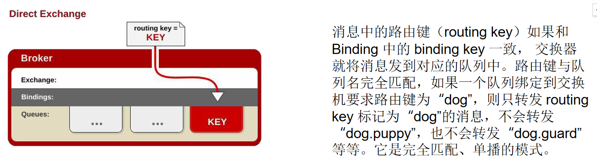

# Message Queue 消息队列
# 一、概述
大多应用中，可通过消息服务中间件来提升系统异步通信、扩展解耦能力
# 消息服务中两个重要概念：
消息代理（message broker）和目的地（destination）
当消息发送者发送消息以后，将由消息代理接管，消息代理保证消息传递到指定目的地。
# 消息队列主要有两种形式的目的地
队列（queue）：点对点消息通信（point-to-point）
主题（topic）：发布（publish）/ 订阅（subscribe）消息通信
# 点对点式：
消息发送者发送消息，消息代理将其放入一个队列中，消息接收者从队列中获 取消息内容，消息读取后被移出队列
消息只有唯一的发送者和接受者，但并不是说只能有一个接收者
# 发布订阅式：
发送者（发布者）发送消息到主题，多个接收者（订阅者）监听（订阅）这个 主题，那么就会在消息到达时同时收到消息
# JMS（Java Message Service）JAVA 消息服务：
基于 JVM 消息代理的规范。ActiveMQ、HornetMQ 是 JMS 实现
# AMQP（Advanced Message Queuing Protocol）
高级消息队列协议，也是一个消息代理的规范，兼容 JMS
RabbitMQ 是 AMQP 的实现
| JMS（Java Message Service） | AMQP（Advanced Message Queuing Protocol） | |
|---|---|---|
| 定义 | Java api | 网络线级协议 |
| 跨语言 | 否 | 是 |
| 跨平台 | 否 | 是 |
| Model | 提供两种消息模型：、Peer-2-Peer、Pub/sub | 提供了五种消息模型：、direct exchange、fanout exchange、topic change、headers exchange、system exchange 本质来讲，后四种和 JMS 的 pub/sub 模型没有太大差别 仅是在路由机制上做了更详细的划分； |
| 支持消息类 型 | 多种消息类型： TextMessage MapMessage BytesMessage StreamMessage ObjectMessageMessage （只有消息头和属性） | byte [] 当实际应用时，有复杂的消息，可以将消息序列化后发 送。 |
| 综合评价 | JMS 定义了 JAVA API 层面的标准；在 java 体系中， 多个 client 均可以通过 JMS 进行交互，不需要应用修 改代码，但是其对跨平台的支持较差； | AMQP 定义了 wire-level 层的协议标准；天然具有跨平 台、跨语言特性。 |
# Spring 支持
spring-jms 提供了对 JMS 的支持
spring-rabbit 提供了对 AMQP 的支持
需要 ConnectionFactory 的实现来连接消息代理
提供 JmsTemplate、RabbitTemplate 来发送消息
@JmsListener（JMS）、@RabbitListener（AMQP）注解在方法上监听消息 代理发布的消息
@EnableJms、@EnableRabbit 开启支持
# Spring Boot 自动配置
JmsAutoConfiguration RabbitAutoConfiguration
# 市面的 MQ 产品
ActiveMQ、RabbitMQ、RocketMQ、Kafka
# 二、RabbitMQ 概念
# RabbitMQ 简介：
RabbitMQ 是一个由 erlang 开发的 AMQP (Advanved Message Queue Protocol) 的开源实现。
# 核心概念
# Message
消息，消息是不具名的，它由消息头和消息体组成。消息体是不透明的，而消息头则由一系列的可选属性组成， 这些属性包括 routing-key（路由键）、priority（相对于其他消息的优先权）、delivery-mode（指出该消息可 能需要持久性存储）等。
# Publisher
消息的生产者，也是一个向交换器发布消息的客户端应用程序。
# Exchange
交换器，用来接收生产者发送的消息并将这些消息路由给服务器中的队列。
Exchange 有 4 种类型：direct (默认)，fanout, topic, 和 headers，不同类型的 Exchange 转发消息的策略有所区别
Queue
消息队列，用来保存消息直到发送给消费者。它是消息的容器，也是消息的终点。一个消息可投入一个或多个队列。消息一直 在队列里面，等待消费者连接到这个队列将其取走。
# Binding
绑定，用于消息队列和交换器之间的关联。一个绑定就是基于路由键将交换器和消息队列连接起来的路由规则，所以可以将交 换器理解成一个由绑定构成的路由表。
Exchange 和 Queue 的绑定可以是多对多的关系。
# Connection
网络连接，比如一个 TCP 连接。
# Channel
信道，多路复用连接中的一条独立的双向数据流通道。信道是建立在真实的 TCP 连接内的虚拟连接，AMQP 命令都是通过信道 发出去的，不管是发布消息、订阅队列还是接收消息，这些动作都是通过信道完成。因为对于操作系统来说建立和销毁 TCP 都 是非常昂贵的开销，所以引入了信道的概念，以复用一条 TCP 连接。
# Consumer
消息的消费者，表示一个从消息队列中取得消息的客户端应用程序。
# Virtual Host
虚拟主机，表示一批交换器、消息队列和相关对象。虚拟主机是共享相同的身份认证和加 密环境的独立服务器域。每个 vhost 本质上就是一个 mini 版的 RabbitMQ 服务器，拥 有自己的队列、交换器、绑定和权限机制。vhost 是 AMQP 概念的基础，必须在连接时 指定，RabbitMQ 默认的 vhost 是 / 。
# Broker
表示消息队列服务器实体
# 三、Docker 安装 RabbitMQ
docker run -d --name rabbitmq -p 5671:5671 -p 5672:5672 -p 4369:4369 -p 25672:25672 -p 15671:15671 -p 15672:15672 rabbitmq:management
4369, 25672 (Erlang 发现 & 集群端口)
5672, 5671 (AMQP 端口)
15672 (web 管理后台端口)
61613, 61614 (STOMP 协议端口)
1883, 8883 (MQTT 协议端口)
https://www.rabbitmq.com/networking.html
# 四、RabbitMQ 运行机制
AMQP 中的消息路由
AMQP 中消息的路由过程和 Java 开
发者熟悉的 JMS 存在一些差别，
AMQP 中增加了 Exchange 和
Binding 的角色。生产者把消息发布
到 Exchange 上，消息最终到达队列
并被消费者接收，而 Binding 决定交 换器的消息应该发送到那个队列。
# Exchange 类型
Exchange 分发消息时根据类型的不同分发策略有区别，目前共四种类型：direct、
fanout、topic、headers 。headers 匹配 AMQP 消息的 header 而不是路由键，
headers 交换器和 direct 交换器完全一致，但性能差很多，目前几乎用不到了，所以直接 看另外三种类型：
# Direct

# Fanout
# Topic
topic 交换器通过模式匹配分配消息的 路由键属性，将路由键和某个模式进行
匹配，此时队列需要绑定到一个模式上。 它将路由键和绑定键的字符串切分成单 词，这些单词之间用点隔开。它同样也 会识别两个通配符：符号 “#” 和符号
“*”。# 匹配 0 个或多个单词，* 匹配一 个单词。
# 直接类型测试
# 广播模式测试
# 主题模式测试
# 五、RabbitMQ 整合
# 引入 spring-boot-starter-amqp
<dependency> | |
<groupId>org.springframework.boot</groupId> | |
<artifactId>spring-boot-starter-amqp</artifactId> | |
</dependency> |
# application.yml 配置
spring: | |
rabbitmq: | |
host: 192.168.61.132 | |
port: 5672 | |
virtual-host: / |
# 开启 rabbitmq
@EnableRabbit // 开启 | |
@SpringBootApplication | |
@MapperScan("com.atguigu.gulimall.order.dao") | |
public class GulimallOrderApplication { | |
public static void main(String[] args) { | |
SpringApplication.run(GulimallOrderApplication.class, args); | |
} | |
} |
# 测试 RabbitMQ
**AmqpAdmin：** 管理组件
**RabbitTemplate：** 消息发送处理组件
@RabbitListener 监听消息的方法可以有三种参数（不分数量，顺序）Object content, Message message, Channel channel
# 测试代码
@Autowired | |
AmqpAdmin amqpAdmin; | |
@Autowired | |
private RabbitTemplate rabbitTemplate; | |
@Test | |
public void sendMessageTest() { | |
OrderReturnReasonEntity reasonEntity = new OrderReturnReasonEntity(); | |
reasonEntity.setId(1L); | |
reasonEntity.setCreateTime(new Date()); | |
reasonEntity.setName("reason"); | |
reasonEntity.setStatus(1); | |
reasonEntity.setSort(2); | |
String msg = "Hello World"; | |
//1、发送消息，如果发送的消息是个对象，会使用序列化机制，将对象写出去，对象必须实现 Serializable 接口 | |
//2、发送的对象类型的消息，可以是一个 json | |
rabbitTemplate.convertAndSend("hello-java-exchange","hello2.java", | |
reasonEntity,new CorrelationData(UUID.randomUUID().toString())); | |
log.info("消息发送完成:{}",reasonEntity); | |
} | |
/** | |
* 1、如何创建 Exchange、Queue、Binding | |
* 1）、使用 AmqpAdmin 进行创建 | |
* 2、如何收发消息 | |
*/ | |
@Test | |
public void createExchange() { | |
Exchange directExchange = new DirectExchange("hello-java-exchange",true,false); | |
amqpAdmin.declareExchange(directExchange); | |
log.info("Exchange[{}]创建成功：","hello-java-exchange"); | |
} | |
@Test | |
public void testCreateQueue() { | |
Queue queue = new Queue("hello-java-queue",true,false,false); | |
amqpAdmin.declareQueue(queue); | |
log.info("Queue[{}]创建成功：","hello-java-queue"); | |
} | |
@Test | |
public void createBinding() { | |
Binding binding = new Binding("hello-java-queue", | |
Binding.DestinationType.QUEUE, | |
"hello-java-exchange", | |
"hello.java", | |
null); | |
amqpAdmin.declareBinding(binding); | |
log.info("Binding[{}]创建成功：","hello-java-binding"); | |
} | |
@Test | |
public void create() { | |
HashMap<String, Object> arguments = new HashMap<>(); | |
arguments.put("x-dead-letter-exchange", "order-event-exchange"); | |
arguments.put("x-dead-letter-routing-key", "order.release.order"); | |
arguments.put("x-message-ttl", 60000); // 消息过期时间 1 分钟 | |
Queue queue = new Queue("order.delay.queue", true, false, false, arguments); | |
amqpAdmin.declareQueue(queue); | |
log.info("Queue[{}]创建成功：","order.delay.queue"); | |
} |
# 配置消息转换器
@Configuration | |
public class MyRabbitConfig { | |
@Bean | |
public MessageConverter messageConverter(){ | |
return new Jackson2JsonMessageConverter(); | |
} | |
} |
# 监听消息
注解 @RabbitListener (queues = {"hello-java-queue"})，必须开启 @EnableRabbit，并在容器中。
/** | |
* queues：声明需要监听的队列 | |
* channel：当前传输数据的通道 | |
*/ | |
@RabbitListener(queues = {"hello-java-queue"}) | |
public void revieveMessage(Message message, | |
OrderReturnReasonEntity content) { | |
// 拿到主体内容 | |
byte[] body = message.getBody(); | |
// 拿到的消息头属性信息 | |
MessageProperties messageProperties = message.getMessageProperties(); | |
System.out.println("接受到的消息...内容" + message + "===内容：" + content); | |
} |
@RabbitHandler // 标注在方法 （监听那些队列即可）
@RabbitListener // 方法和类上都行（重载区分不同的消息）
# 六、RabbitMQ 消息确认机制 - 可靠抵达
应答配置和配置类
可靠抵达 - ConfirmCallback
- spring.rabbitmq.publisher-confirms=true
- 在创建 connectionFactory 的时候设置 PublisherConfirms (true) 选项，开启
confirmcallback 。 - CorrelationData：用来表示当前消息唯一性。
- 消息只要被 broker 接收到就会执行 confirmCallback，如果是 cluster 模式，需要所有
broker 接收到才会调用 confirmCallback。 - 被 broker 接收到只能表示 message 已经到达服务器，并不能保证消息一定会被投递 到目标 queue 里。所以需要用到接下来的 returnCallback 。
发送端确认 | |
/** | |
* 定制 RabbitTemplate | |
* 1、服务收到消息就会回调 | |
* 1、spring.rabbitmq.publisher-confirms: true | |
* 2、设置确认回调 | |
* 2、消息正确抵达队列就会进行回调 | |
* 1、spring.rabbitmq.publisher-returns: true | |
* spring.rabbitmq.template.mandatory: true | |
* 2、设置确认回调 ReturnCallback | |
* | |
* 3、消费端确认 (保证每个消息都被正确消费，此时才可以 broker 删除这个消息) | |
* | |
*/ | |
// @PostConstruct //MyRabbitConfig 对象创建完成以后，执行这个方法 | |
public void initRabbitTemplate() { | |
/** | |
* 1、只要消息抵达 Broker 就 ack=true | |
* correlationData：当前消息的唯一关联数据 (这个是消息的唯一 id) | |
* ack：消息是否成功收到 | |
* cause：失败的原因 | |
*/ | |
// 设置确认回调 | |
rabbitTemplate.setConfirmCallback((correlationData,ack,cause) -> { | |
System.out.println("confirm...correlationData["+correlationData+"]==>ack:["+ack+"]==>cause:["+cause+"]"); | |
}); | |
/** | |
* 只要消息没有投递给指定的队列，就触发这个失败回调 | |
* message：投递失败的消息详细信息 | |
* replyCode：回复的状态码 | |
* replyText：回复的文本内容 | |
* exchange：当时这个消息发给哪个交换机 | |
* routingKey：当时这个消息用哪个路邮键 | |
*/ | |
rabbitTemplate.setReturnCallback((message,replyCode,replyText,exchange,routingKey) -> { | |
System.out.println("Fail Message["+message+"]==>replyCode["+replyCode+"]" + | |
"==>replyText["+replyText+"]==>exchange["+exchange+"]==>routingKey["+routingKey+"]"); | |
}); | |
} |
可靠抵达 - ReturnCallback
- spring.rabbitmq.publisher-returns=true
- spring.rabbitmq.template.mandatory=true
- confrim 模式只能保证消息到达 broker，不能保证消息准确投递到目标 queue 里。在有 些业务场景下，我们需要保证消息一定要投递到目标 queue 里，此时就需要用到
return 退回模式。 - 这样如果未能投递到目标 queue 里将调用 returnCallback ，可以记录下详细到投递数 据，定期的巡检或者自动纠错都需要这些数据。
可靠抵达 - Ack 消息确认机制
消费者获取到消息，成功处理，可以回复 Ack 给 Broker
basic.ack 用于肯定确认；broker 将移除此消息
basic.nack 用于否定确认；可以指定 broker 是否丢弃此消息，可以批量
basic.reject 用于否定确认；同上，但不能批量
默认自动 ack，消息被消费者收到，就会从 broker 的 queue 中移除
queue 无消费者，消息依然会被存储，直到消费者消费
消费者收到消息，默认会自动 ack。但是如果无法确定此消息是否被处理完成， 或者成功处理。我们可以开启手动 ack 模式
- 消息处理成功，ack ()，接受下一个消息，此消息 broker 就会移除
- 消息处理失败，nack ()/reject ()，重新发送给其他人进行处理，或者容错处理后 ack
- 消息一直没有调用 ack/nack 方法，broker 认为此消息正在被处理，不会投递给别人，此时客户 端断开，消息不会被 broker 移除，会投递给别人
配置

@RabbitHandler | |
public void revieveMessage(Message message, | |
OrderReturnReasonEntity content, | |
Channel channel) { | |
// 拿到主体内容 | |
byte[] body = message.getBody(); | |
// 拿到的消息头属性信息 | |
MessageProperties messageProperties = message.getMessageProperties(); | |
System.out.println("接受到的消息...内容" + message + "===内容：" + content); | |
long deliveryTag = messageProperties.getDeliveryTag(); | |
// 手动 | |
try { | |
if(deliveryTag%2==0){ | |
// 收货 boolean 类型参数是否批量收货 | |
channel.basicAck(deliveryTag,false); | |
System.out.println("签收了货物"+deliveryTag); | |
} else { | |
// 退货 是否退货后返回队列 | |
channel.basicNack(deliveryTag, false, false); | |
System.out.println("没有签收货物"); | |
} | |
} catch (Exception e) { | |
e.printStackTrace(); | |
} | |
} |
# 七、RabbitMQ 延时队列（实现定时任务）
场景：
比如未付款订单，超过一定时间后，系统自动取消订单并释放占有物品。
常用解决方案：
spring 的 schedule 定时任务轮询数据库
缺点：
消耗系统内存、增加了数据库的压力、存在较大的时间误差
解决：rabbitmq 的消息 TTL 和死信 Exchange 结合
# 消息的 TTL（Time To Live）
消息的 TTL 就是消息的存活时间。
RabbitMQ 可以对队列和消息分别设置 TTL。
- 对队列设置就是队列没有消费者连着的保留时间，也可以对每一个单独的消息做单独的 设置。超过了这个时间，我们认为这个消息就死了，称之为死信。
- 如果队列设置了，消息也设置了，那么会取小的。所以一个消息如果被路由到不同的队 列中，这个消息死亡的时间有可能不一样（不同的队列设置）。这里单讲单个消息的
TTL，因为它才是实现延迟任务的关键。可以通过设置消息的 expiration 字段或者 x- message-ttl 属性来设置时间，两者是一样的效果。
一个消息在满足如下条件下，会进死信路由，记住这里是路由而不是队列， 一个路由可以对应很多队列。（什么是死信）
- 一个消息被 Consumer 拒收了，并且 reject 方法的参数里 requeue 是 false。也就是说不 会被再次放在队列里，被其他消费者使用。（basic.reject/basic.nack）requeue=false
- 上面的消息的 TTL 到了，消息过期了。
- 队列的长度限制满了。排在前面的消息会被丢弃或者扔到死信路由上
Dead Letter Exchange 其实就是一种普通的 exchange，和创建其他
exchange 没有两样。只是在某一个设置 Dead Letter Exchange 的队列中有 消息过期了，会自动触发消息的转发，发送到 Dead Letter Exchange 中去。我们既可以控制消息在一段时间后变成死信，又可以控制变成死信的消息 被路由到某一个指定的交换机，结合二者，其实就可以实现一个延时队列
手动 ack & 异常消息统一放在一个队列处理建议的两种方式
- catch 异常后，手动发送到指定队列，然后使用 channel 给 rabbitmq 确认消息已消费
- 给 Queue 绑定死信队列，使用 nack（requque 为 false）确认消息消费失败
升级版就是一个交换机转发消息过期队列也可以转发死信队列
# SpringBoot 中使用延时队列
1、Queue、Exchange、Binding 可以 @Bean 进去
2、监听消息的方法可以有三种参数（不分数量，顺序）
Object content, Message message, Channel channel
3、channel 可以用来拒绝消息，否则自动 ack；
# 代码整合 Springboot
# 配置
/** | |
* @author WangXuefeng | |
* @version 1.0 | |
* @date 2021/7/27 15:23 | |
* @description spring 方式创建队列交换机 | |
*/ | |
@Configuration | |
public class MyMQConfig { | |
@RabbitListener(queues = "order.release.order.queue") | |
public void listener(OrderEntity orderEntity, Channel channel, Message message) throws IOException { | |
System.out.println("收到过期订单信息，准备关闭订单 -》 " + orderEntity.getOrderSn()); | |
// 手动应答 | |
channel.basicAck(message.getMessageProperties().getDeliveryTag(),false); | |
} | |
/** | |
* 容器中的 Binding Queue Exchange 都会自动创建 | |
* (Rabbit MQ 里面有不会覆盖) | |
* @return | |
*/ | |
@Bean | |
public Queue orderDelayQueue(){ | |
Map<String,Object> args = new HashMap<>(); | |
/** | |
* x-dead-letter-exchange: order-event-exchange | |
* x-dead-letter-routing-key: order.release.order | |
* x-message-ttl: 60000 | |
*/ | |
args.put("x-dead-letter-exchange","order-event-exchange"); | |
args.put("x-dead-letter-routing-key","order.release.order"); | |
args.put("x-message-ttl",60000); | |
return new Queue("order.delay.queue", true, false, false, args); | |
} | |
@Bean | |
public Queue orderReleaseOrderQueue(){ | |
return new Queue("order.release.order.queue", true, false, false); | |
} | |
@Bean | |
public Exchange orderEventExchange(){ | |
return new TopicExchange("order-event-exchange",true,false); | |
} | |
@Bean | |
public Binding orderCreateOrderBinding(){ | |
return new Binding("order.delay.queue", | |
Binding.DestinationType.QUEUE, | |
"order-event-exchange", | |
"order.create.order", | |
null); | |
} | |
@Bean | |
public Binding orderReleaseOrderBinding(){ | |
return new Binding("order.release.order.queue", | |
Binding.DestinationType.QUEUE, | |
"order-event-exchange", | |
"order.release.order", | |
null); | |
} | |
} |
# 测试
@ResponseBody | |
@GetMapping(value = "/test/createOrder") | |
public String createOrderTest() { | |
// 订单下单成功 | |
OrderEntity orderEntity = new OrderEntity(); | |
orderEntity.setOrderSn(UUID.randomUUID().toString()); | |
orderEntity.setModifyTime(new Date()); | |
// 给 MQ 发送消息 | |
rabbitTemplate.convertAndSend("order-event-exchange","order.create.order",orderEntity); | |
return "ok"; | |
} | |
/** | |
* 监听 | |
*/ | |
@RabbitListener(queues = "order.release.order.queue") // 监听那个队列 | |
public void listener(OrderEntity orderEntity, Channel channel, Message message) throws IOException { | |
System.out.println("收到过期订单信息，准备关闭订单 -》 " + orderEntity.getOrderSn()); | |
// 手动应答 | |
channel.basicAck(message.getMessageProperties().getDeliveryTag(),false); | |
} |
如果我们在配置中编写创建交换机和队列，那么必须要进行下监听，否则启动 spring 不会为我们创建交换机和队列的
# 八、消息可靠性
# 消息丢失
1、消息丢失
- 消息发送出去，由于网络问题没有抵达服务器
- 做好容错方法（try-catch），发送消息可能会网络失败，失败后要有重试机 制，可记录到数据库，采用定期扫描重发的方式
- 做好日志记录，每个消息状态是否都被服务器收到都应该记录
- 做好定期重发，如果消息没有发送成功，定期去数据库扫描未成功的消息进 行重发
try { | |
//TODO 确保每个消息发送成功，给每个消息做好日志记录，(给数据库保存每一个详细信息) 保存每个消息的详细信息 | |
rabbitTemplate.convertAndSend("order-event-exchange", "order.release.other", orderTo); | |
} catch (Exception e) { | |
//TODO 定期扫描数据库，重新发送失败的消息 | |
} |
- 消息抵达 Broker，Broker 要将消息写入磁盘（持久化）才算成功。此时 Broker 尚 未持久化完成，宕机。
- publisher 也必须加入确认回调机制，确认成功的消息，修改数据库消息状态。
/** | |
* 定制 RabbitTemplate | |
* 1、服务收到消息就会回调 | |
* 1、spring.rabbitmq.publisher-confirms: true | |
* 2、设置确认回调 | |
* 2、消息正确抵达队列就会进行回调 | |
* 1、spring.rabbitmq.publisher-returns: true | |
* spring.rabbitmq.template.mandatory: true | |
* 2、设置确认回调 ReturnCallback | |
* | |
* 3、消费端确认 (保证每个消息都被正确消费，此时才可以 broker 删除这个消息) | |
* | |
*/ | |
// @PostConstruct //MyRabbitConfig 对象创建完成以后，执行这个方法 | |
public void initRabbitTemplate() { | |
/** | |
* 1、只要消息抵达 Broker 就 ack=true | |
* correlationData：当前消息的唯一关联数据 (这个是消息的唯一 id) | |
* ack：消息是否成功收到 | |
* cause：失败的原因 | |
*/ | |
// 设置确认回调 | |
rabbitTemplate.setConfirmCallback((correlationData,ack,cause) -> { | |
System.out.println("confirm...correlationData["+correlationData+"]==>ack:["+ack+"]==>cause:["+cause+"]"); | |
}); | |
/** | |
* 只要消息没有投递给指定的队列，就触发这个失败回调 | |
* message：投递失败的消息详细信息 | |
* replyCode：回复的状态码 | |
* replyText：回复的文本内容 | |
* exchange：当时这个消息发给哪个交换机 | |
* routingKey：当时这个消息用哪个路邮键 | |
*/ | |
rabbitTemplate.setReturnCallback((message,replyCode,replyText,exchange,routingKey) -> { | |
System.out.println("Fail Message["+message+"]==>replyCode["+replyCode+"]" + | |
"==>replyText["+replyText+"]==>exchange["+exchange+"]==>routingKey["+routingKey+"]"); | |
}); | |
} |
配置
spring: | |
rabbitmq: | |
host: 192.168.61.132 | |
port: 5672 | |
virtual-host: / | |
publisher-confirms: true 开启服务器确认机制 | |
publisher-returns: true 开启错误回调 | |
template: | |
mandatory: true | |
listener: | |
simple: | |
acknowledge-mode: manual 开启手动应答模式 |
- 自动 ACK 的状态下。消费者收到消息，但没来得及消息然后宕机
- 一定开启手动 ACK，消费成功才移除，失败或者没来得及处理就 noAck 并重 新入队
try { | |
wareSkuService.unlockStock(orderTo); | |
// 手动删除消息 | |
channel.basicAck(message.getMessageProperties().getDeliveryTag(),false); | |
} catch (Exception e) { | |
// 解锁失败 将消息重新放回队列，让别人消费 | |
channel.basicReject(message.getMessageProperties().getDeliveryTag(),true); | |
} |
# 消息重复
2、消息重复
- 消息消费成功，事务已经提交，ack 时，机器宕机。导致没有 ack 成功，Broker 的消息 重新由 unack 变为 ready，并发送给其他消费者
- 消息消费失败，由于重试机制，自动又将消息发送出去 （这种情况允许二次消费，因为第一次没成功）
- 成功消费，ack 时宕机，消息由 unack 变为 ready，Broker 又重新发送
- 消费者的业务消费接口应该设计为幂等性的。比如扣库存有 工作单的状态标志
- 使用防重表（redis/mysql），发送消息每一个都有业务的唯 一标识，处理过就不用处理
- rabbitMQ 的每一个消息都有 redelivered 字段，可以获取是否 是被重新投递过来的，而不是第一次投递过来的（不推荐，错误了是可以尝试第二次消费的）
# 消息积压
3、消息积压
- 消费者宕机积压
- 消费者消费能力不足积压
- 发送者发送流量太大
- 上线更多的消费者，进行正常消费
- 上线专门的队列消费服务，将消息先批量取出来，记录数据库，离线慢慢处理